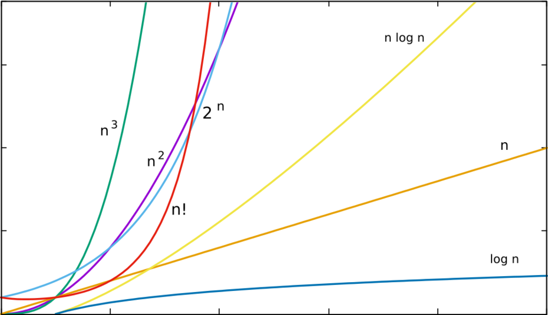
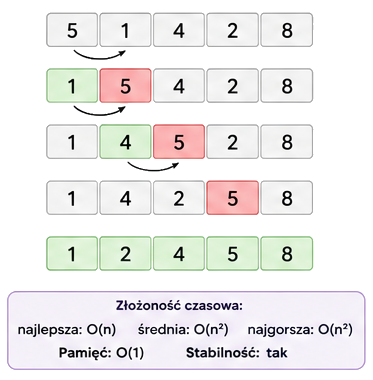
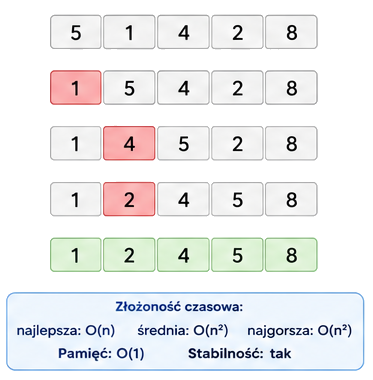
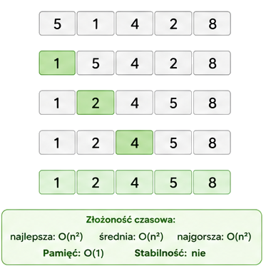
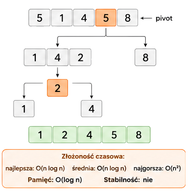
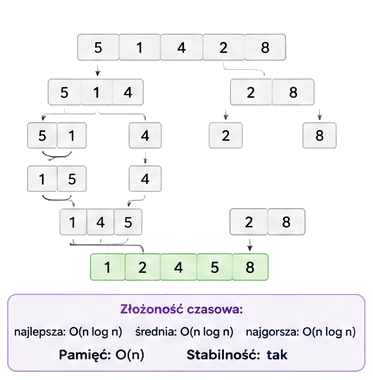
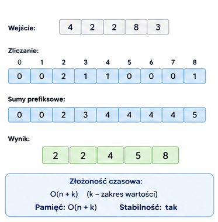

| Rodzaj sortowania | Złożoność obliczeniowa |
|---|---|
| Sortowanie proste | O(n²) |
| Sortowanie zaawansowane | O(n log n) |
| Sortowanie specjalne | O(n+k) |

Sortowanie w algorytmice to proces uporządkowania elementów zbioru (np. liczb, napisów, rekordów) według określonego kryterium, najczęściej rosnąco lub malejąco.
Ważne właściwości algorytmów sortowania
- Złożoność czasowa - ile operacji wykonuje algorytm (np. O(n²), O(n log n))
- Złożoność pamięciowa - ile dodatkowej pamięci wymaga
- Stabilność - czy zachowuje kolejność równych elementów
Dlaczego sortowanie jest ważne
- przyspiesza wyszukiwanie (np. wyszukiwanie binarne)
- umożliwia efektywne przetwarzanie danych
- jest podstawą wielu bardziej złożonych algorytmów
Wybór algorytmu w praktyce
- rozmiaru danych
- rodzaju danych
- dostępnej pamięci
- czy dane są częściowo posortowane
Przykłady
- mała ilość danych (do kilku tysięcy elementów) - Insertion Sort
- duża ilość danych (kilka milionów elementów) - Merge Sort / Quick Sort
- liczby całkowite z małego zakresu - Counting Sort
Warto zauważyć, że sortowanie 10 elementów algorytmem Insertion Sort może być szybsze niż sortowanie Quick Sortem, natomiast dla sortowania 1 000 000 elementów Insertion Sort po prostu jest niepraktyczny.
-
Sortowanie bąbelkowe (ang.
Bubble sort) - polega na wielokrotnym porównywaniu
sąsiednich elementów i zamienianiu ich miejscami, jeśli są w
złej kolejności.

-
Sortowanie przez wstawianie (ang.
Insertion sort) - polega na budowaniu posortowanej
części tablicy poprzez wstawianie kolejnych elementów na
właściwe miejsce.

-
Sortowanie przez wybieranie (ang.
Selection sort) - polega na wielokrotnym wybieraniu
najmniejszego elementu z nieposortowanej części tablicy i
umieszczaniu go na właściwej pozycji.

-
Sortowanie szybkie (ang. Quicksort) -
wykorzystuje metodę "dziel i zwyciężaj". Polega na dzieleniu
tablicy na mniejsze części, które są następnie sortowane
niezależnie.

-
Sortowanie przez scalanie (ang.
Merge Sort) - wykorzystuje metodę "dziel i zwyciężaj".
Polega na dzieleniu tablicy na mniejsze części, ich sortowaniu,
a następnie scalaniu w jedną uporządkowaną całość.

-
Sortowanie przez zliczanie (ang.
Counting sort) - polega na wykorzystaniu ilości oraz
wartości elementów do ustalenia ich pozycji.
